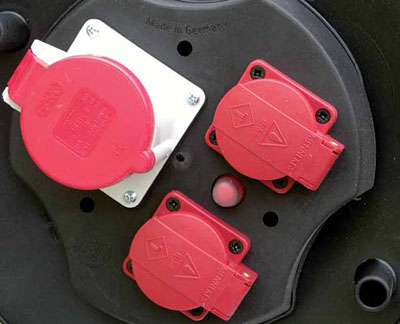
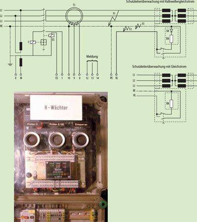
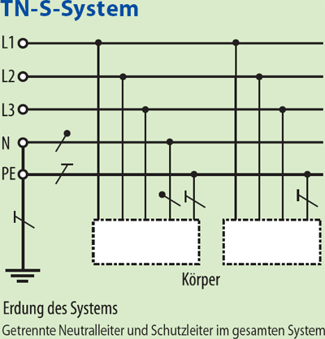
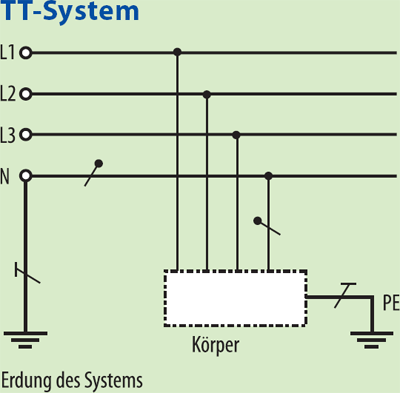
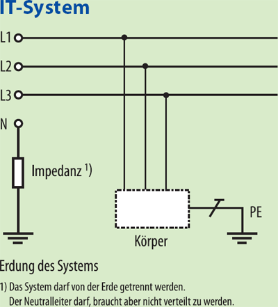
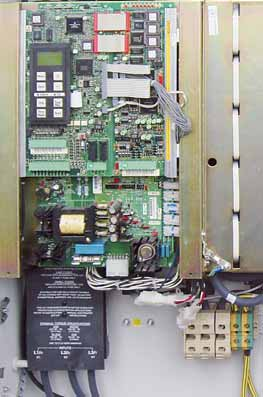
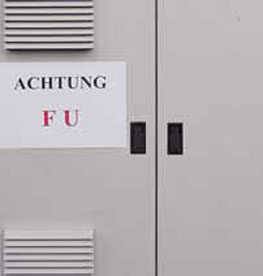
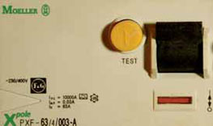
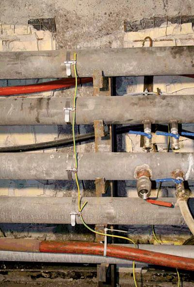

Hochspannungsnetze auf Tunnelbaustellen sind entsprechend VDE 0101//ÖVE/ÖNORM E 8383 zu errichten.
Auf Tunnelbaustellen sind die Hochspannungsnetze unter Tage grundsätzlich mit isoliertem Sternpunkt auszuführen (siehe VDE 0118//ÖVE E 18). Elektrische Schutzeinrichtungen müssen in Verbindung mit Schaltgeräten im Falle eines Fehlers die zu schützenden Leitungen automatisch abschalten.
Folgende Fehler sind in Betracht zu ziehen (siehe auch VDE 0118):
Elektrische Schutzeinrichtungen müssen sicherstellen, dass nach dem Abschalten der fehlerbehaftete Teil des Netzes nicht wieder eingeschaltet werden kann. Zusätzlich muss die elektrische Schutzeinrichtung mit dem am Anfang der überwachten Leitung angeordnetem Schaltgerät elektrisch so zusammengeschaltet sein, dass die Leitung nur bei aktivierter Schutzeinrichtung in Betrieb genommen werden kann.
Die oben genannten Fehler werden durch einen Hochspannungs-Leitungswächter (H-Wächter) in Verbindung mit geeignetem konstruktivem Leitungsaufbau der zu schützenden Leitungen (siehe Abschnitt 4.5) und einem zugeordneten Schaltgerät sicher abgeschaltet.

Als Netzsysteme sind nach dem Speisepunkt nur TN-S-, TT- oder IT-Systeme zulässig.
Zuleitung zum Speisepunkt bei TN-Systemen
Bei Anwendung des TN-S-Systems hinter Baustromverteilern als Speisepunkt sind für die Zuleitung vor dem Baustromverteiler folgende Netzformen zulässig:
TN-S-System
oder
TN-C-System
mit folgender Einschränkung:
Es müssen Kabel und Leitungen mit Querschnitten von mindestens 10 mm² Cu oder 16 mm² Al verwendet werden, die während des Betriebes nicht bewegt werden und mechanisch geschützt sind.
Mechanischer Schutz der Kabel und Leitungen wird erreicht durch folgende Maßnahmen:



3.1.2.1 Stromkreise ohne Steckvorrichtungen
In Stromkreisen ohne Steckvorrichtungen müssen eine oder mehrere Schutzmaßnahmen nach VDE 0100-410//ÖVE/ÖNORM E 8001 Teil 1 angewendet werden.
3.1.2.2 Stromkreise mit Steckvorrichtungen
und Stromkreise mit fest angeschlossenen, in der Hand gehaltenen Verbrauchsmitteln.
Für diese Stromkreise sind die folgenden Schutzmaßnahmen anzuwenden:
TT-und TN-S-System
Als RCD sind je nach Anwendungsfall pulsstromsensitive Fehlerstrom-Schutzschalter (Typ A) oder allstromsensitive Fehlerstrom-Schutzschalter (Typ B) einzusetzen. Bei Einsatz von frequenzgesteuerten Betriebsmitteln auf Baustellen siehe auch Abschnitt 3.1.2.4.
Da Symbole zur Zeit noch nicht genormt sind, werden frequenzgesteuerte Betriebsmittel von den Herstellern individuell gekennzeichnet.
IT-System
Überwacht bedeutet, dass die Wahrnehmung der Meldung sichergestelltsein muss und umgehend Maßnahmen zur Fehlerbeseitigung eingeleitet werden.
3.1.2.3 Weitere Schutzmaßnahmen
Ergänzend zu Abschnitt 3.1.2.2 sind hinter Speisepunkten auch folgende Schutzmaßnahmen zulässig:
Für leitfähige Bereiche mit begrenzter Bewegungsfreiheit siehe VDE 0100-706//ÖVE-EN1 (siehe auch BGI 594).
Bei Verwendung von Ersatzstromerzeugern sind die Maßnahmen nach VDE 0100-551//ÖVE-EN 1, Teil 4 (§53) anzuwenden (siehe auch BGI 867).
3.1.2.4 Schutzmaßnahmen für frequenzgesteuerte Betriebsmittel
Das Betreiben von Betriebsmitteln, die hochfrequente Fehlerströme oder glatte Gleichfehlerströme erzeugen können, darf die in den Abschnitten 3.1.2.1 bis 3.1.2.3 aufgeführten Schutzmaßnahmen nicht beeinträchtigen.
Hinweis:
Frequenzgesteuerte Betriebsmittel sind durch den Hersteller entsprechend VDE 0160-102//ÖVE/ÖNORM EN 61800-2 zu kennzeichnen.
Hochfrequente Fehlerströme oder glatte Gleichfehlerströme können bei Betriebsmitteln mit Gleichrichterschaltungen, beispielsweise bei Frequenzumrichtern mit Drehstrombrückenschaltung - sechspulsig -, auftreten.



Die Beeinträchtigung der Schutzmaßnahmen kann verhindert und der Schutz im Fehlerfall sichergestellt werden, wenn
Anmerkung zu Punkt 3:
Bei Verwendung von Trenntransformatoren ist darauf zu achten, dass auf der Sekundärseite der Schutz im Fehlerfall sichergestellt ist.
In Tunnelbaustellen ist grundsätzlich ein Potentialausgleich erforderlich. Bei Parallelvortrieben mit getrennter Versorgung ist der Potentialausgleich über vorhandene Querschläge herzustellen.
Potentialausgleichsleiter sind getrennt von elektrischen Kabeln und Leitungen auszuführen und aufgrund der zu erwartenden erhöhten Übergangswiderstände (z. B. durch Korrosionsbildung, mechanischen Einwirkungen) in Abständen von höchstens 100 m mit Rohrleitungen, Gleisen oder sonstigen Metallkonstruktionen elektrisch leitend zu verbinden. Die Erdungsanlage der obertägigen Installation ist mit dem Potentialausgleich der untertägigen Anlage zu verbinden. Zur Verbesserung der Erdungsverhältnisse können leitfähige Teile der baulichen Einrichtungen (Spundwände, Rohrschirme, Profilträger, u.a.) einbezogen werden.
Der Querschnitt des Potentialausgleichsleiters ist rechnerisch nach VDE 0100-540//ÖVE/ÖNORM E 8001-1 zu ermitteln; er muss im Tunnelbau mindestens 50 mm2 Cu betragen oder einem gleichen Leitwert entsprechen (Stahlseilmindestens 12 mm Durchmesser, z.B. Typ 6x36+SES DIN 3064 SZ).
